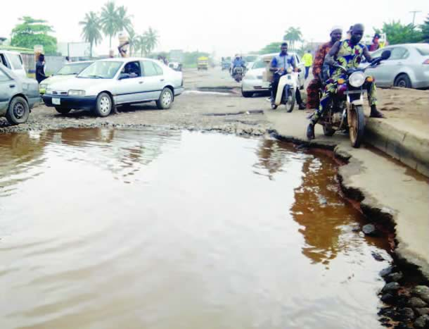
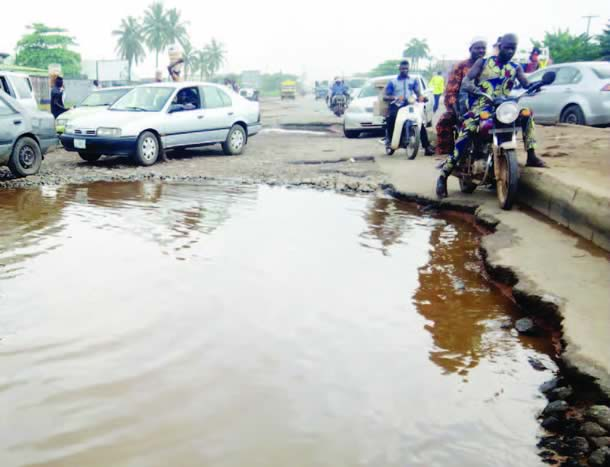
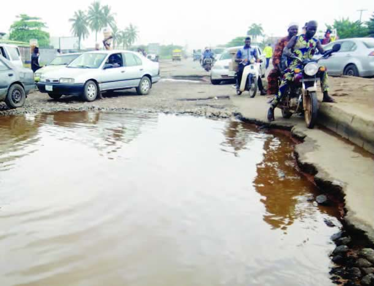

Amplifying Community Needs
Connecting underserved communities in Ghana with government agencies, NGOs, and compassionate individuals who can help.
 

is loading...
Upload real stories from your community and help bring change through visibility and advocacy.
Connecting underserved communities in Ghana with government agencies, NGOs, and compassionate individuals who can help.

Community members upload photos and videos showing challenges in their area.
Your reports reach government agencies, NGOs, and concerned citizens.
Organizations and individuals can respond with assistance and solutions.
Many rural schools lack basic infrastructure and resources for learning.
Clean water is a major challenge in underserved communities.
Poor road networks cut off villages from schools, markets, and hospitals.
Many rural schools lack basic infrastructure and resources for learning.
Clean water is a major challenge in underserved communities.
Poor road networks cut off villages from schools, markets, and hospitals.
LocalVoice is more than just a platform to share challenges, it's a bridge that connects underserved communities with organizations and individuals who have the capacity to make a difference. Whether you're part of a nonprofit, a government agency, a philanthropist, or simply someone who cares, your support is vital.
By exploring the documented stories, you can gain real-time insight into the severity and urgency of needs across Ghana's communities. Create an account to track impact, view community profiles, and communicate directly with the users who submitted specific challenges.
Access visual and written evidence of the most critical situations.
Reach out to the people behind the stories and understand more context.
Track the help you provide and the difference it creates over time.
LocalVoice is an open and transparent platform that gives government agencies and departments a direct window into the realities of underserved communities. Every image, video, and report shared reflects real, on-the-ground challenges faced by citizens across Ghana.
As a government body, you can monitor public submissions in real-time, identify critical development gaps, and allocate resources more effectively. From infrastructure and sanitation to education and healthcare, LocalVoice empowers you to prioritize interventions based on verified local needs.
Use citizen-submitted reports to guide development decisions and urgent responses.
Publicly show commitment by responding to visible, verifiable challenges.
See which areas have received help and monitor follow-up results.
LocalVoice welcomes individuals from all walks of life to become active participants in shaping a better Ghana. If you've witnessed a challenge in your community whether it’s poor drainage, broken school structures, or limited healthcare access your voice matters.
Through our platform, you can upload videos, photos, and descriptions of the problems your locality is facing. This data becomes part of a growing national database, helping others including government agencies, NGOs, and media visualize and understand what’s truly happening in neglected areas.
Upload photos and videos to make invisible challenges visible to the world.
Your uploads help communities gain the attention and support they deserve.
Stand up for your town or village by giving it digital visibility on a national platform.
“It is what we make out of what we have, not what we are given, that separates one person from another.”
Join LocalVoice today and help amplify the voices of underserved communities across Ghana.